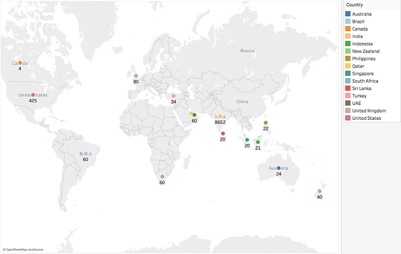

DENSITY BY COUNTRY
Here, I'm creating Choropleth world maps to look at restaurant density by country.
DENSITY OF RESTAURANTS BY COUNTRY
The plot below shows the country locations and the number of restaurants for each. It
becomes clear right away that India has a disproportionally large number of restaurants
compared to the others.

TOP 3 CUISINE (DENSITY OF RESTAURANT BY COUNTRY)
There are some quick conclusions to be made. It was made clear before that India has the highest overall density, but now we can see that it has the highest density of restaurants for all 3 of the most prevalent cuisines. We also expected for there to be many Chinese and Fast Food restaurants. But still, there is a large disparity shown here between Indian cuisine and other cuisine types. But since we are only looking at 15 countries and the data doesn't account for all restaurants, it's still too early to make definitive conclusions.
Indian Cuisine
Chinese Cuisine
Fast Food Cuisine
PRICE/RATING
Here, I'm creating a bar chart to look at average price and rating for each country.
AVERAGE PRICE AND RATING BY COUNTRY
Here, I'm interested in seeing if there is any correlation to be found between price and rating. Also, there may be an effect on these two features depending on the country, so it is important to make judgements based on previous information on restaurant density for each country.
BEST RATED
Here, I'm creating bar charts to visualize the best rated restaurants and cuisines for each country.
BEST RATED RESTAURANTS
Since there are 15 countries to look through, I instead just took the two countries with the greatest number of restaurants (India and United States). We can see some interesting patterns occuring. For India, there's a clear upward trend. We expect there to be less highly rated restaurants, which is about expected. But for the US, we can see that the greatest number of restaurants are around the "Good" range (3.6-4.3). Of course, again we cannot reach any strong conclusions just based off of this, since India has thousands of more sample points than the US. Click the images below for a closer look:

City Cuisines
Here, I'm creating 5 pie charts to look at the percentage of cuisine types for the 5 cities with the greatest number of restaurants.